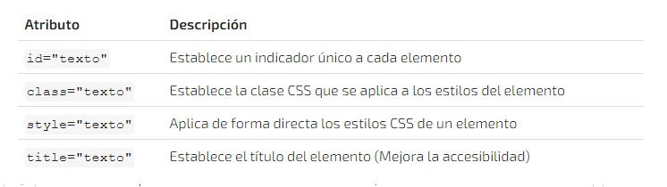
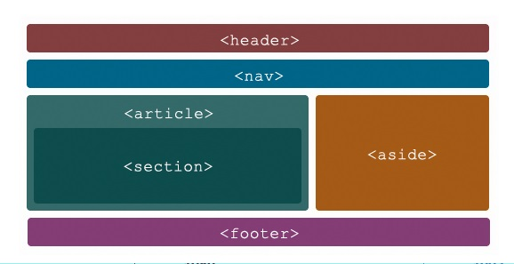
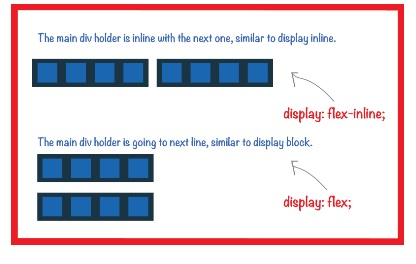
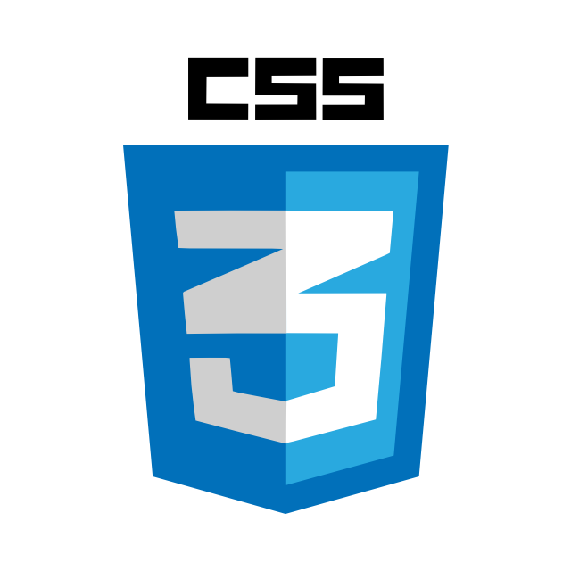
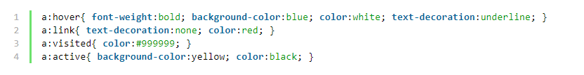

Unidad 1: GIT/GITHUB
¿Que es GIT?
 Sistema de control de Versiones, fue creado para el
manejo de archivos de código fuente (Proyectos de
Software), coordinar el trabajo en equipo y llevar un
control de los cambios realizados tanto al código
fuente como a los archivos.
Sistema de control de Versiones, fue creado para el
manejo de archivos de código fuente (Proyectos de
Software), coordinar el trabajo en equipo y llevar un
control de los cambios realizados tanto al código
fuente como a los archivos.
¿Que es GITHUB?
 Plataforma Web que guarda proyectos de software
por medio del sistema de control de versiones GIT.
Se debe crear una cuenta en la página oficial, y allí
crear los repositorios que tendrán el codigo de
nuestros proyectos.
Plataforma Web que guarda proyectos de software
por medio del sistema de control de versiones GIT.
Se debe crear una cuenta en la página oficial, y allí
crear los repositorios que tendrán el codigo de
nuestros proyectos.
Crear nuevo repositorio en la cuenta de GitHub
-
Nos ubicamos en el archivo o carpeta que deseamos subir a GitHub y damos click derecho
Escogemos la opción Git Bash Here; esto abrirá una consola.
- Enlazar repositorio local al repositorio de la nube
- Configurar credenciales
- Debemos indicarle al sistema qué usuario se conectará con los repositorios de la nube de GitHub
- Cambiar configuración global del usuario de GIT:
git config --global user.name "tu Nombre de usuario de Git"
- Cambiar configuración global del correo de GIT
git config -- global user.email "tu correo"
- Debemos ahora incializar un repositorio desde de la consola.
- Esto indicará que los archivos que estén
en la carpeta se podrán subir dinámicamente a la nube.
-
git init
-
git status
Este comando nos permite evaluar si hay nuevos archivos o cambios en el repositorio que no hayan
sido
guardados o anexados.
-
git add
Este comando nos permite añadir los archivos y/o carpetas a una fase llamada staging, preparando
los archivos para su posterior carga al repositorio de la nube
El punto ( . ) nos indica que se anexarán todos los archivos que tengamos.
Otra indicación es git add -A que cumple con la misma función.
Si deseamos anexar un archivo en específio, indicamos el comando git add nombreArchivo
-
git commit -m
Con este comando indicamos un comentario que sea referente a los archivos que acabamos de
anexar.
Siempre debemos indicarle el comentario por medio de las comillas.
- Este comentario debe ser claro, conciso con un límite de un tweet (300 caracteres)
ejemplo: git commit - m "Esto es un ejemplo de comentario"
-
git remote add origin
para gregar repositorio remoto de GitHub debemos enlazar nuestro repositorio local con nuestro
repositorio en la nube a través de la url
ejemplo:
git remote add origin https://github.com/usuarioPepe/repositorioPrueba
-
git push origin master
Este comando nos permite subir nuestro archivos anexados en git add a nuestro repositorio
enlazado
en git remote add origin.
tener en cuenta:
Estos son los pasos cuando es cremos nuestro un primer repositorio, es decir, un nuevo
proyecto.
Si éste ya existe, no tenemos la necesidad de iniciar nuevamente el repositorio local ni enlazarlo
con
el repo de la nube
Haremos los siguientes pasos:
◙ git add .
◙ git status
◙ git commit -m
◙ git push origin master
De esta forma hemos actualizado nuestro repositorio de la nube.
Unidad 2: HTML5
¿Que es HTML?
 HTML (Hypertext Markup Language), es un lenguaje de
marcado el cual se encuentra en su versión 5, se utiliza
para la estructura de un sitio web y determina el contenido
de una página como texto, imágenes, videos entre otros.
HTML (Hypertext Markup Language), es un lenguaje de
marcado el cual se encuentra en su versión 5, se utiliza
para la estructura de un sitio web y determina el contenido
de una página como texto, imágenes, videos entre otros.
Estructura Html

Cada página comienza con:
< HTML>
A continuación viene la cabecera, delimitada por
< HEAD> y < /HEAD>
Después, el comando
< BODY>
que indica el comienzo del cuerpo de la página.
Las instrucciones HTML se escribirán a continuación,
y finalizarán con
< /BODY>
La página acabará con
< /HTML>
Etiquetas HTML
Las etiquetas HTML son fragmentos de texto rodeados por
corchetes angulares <>, que tienen funciones y usos
específicos y se utilizan para escribir código HTML.
Están representadas por elementos que contienen una
etiqueta de < inicio>, un contenido ubicado en el medio y
una etiqueta de < / cierre>.
Ejemplo
< elemento> contenido < / elemento>
Etiquetas Basicas
Para crear encabezados en nuestra página web se
utiliza la etiqueta
< h1>
para el texto de tamaño más grande, hasta
< h6>
siendo el tamaño de texto más pequeño.
La etiqueta
< p>
< /p define un párrafo >
las etiquetas vacias so aquellos elementos que no tienen contenido es un salto de linea y
hr es separador
La etiqueta
< pre>
define un texto preformateado,conserva espacios y saltos de Líneas.
las etiquetas formatos de Texto, fueron diseñados para mostrar tipos especiales de texto.
< b>
< /b>
para añadir negrita en el texto
< i>
< /i>
para que el texto quede en cursiva
< strong>
< /strong para texto importante
< del>
< /del>
para que quede subrayado
Atributos basicos
Los atributos básicos se utilizan en la mayoría de etiquetas HTML , aunque adquieren
mayor sentido cuando se utilizan hojas de estilo en cascada (CSS):

Semantica Html5

Veamos como podemos añadir un significado a este documento, únicamente aplicando las
nuevas etiquetas semánticas
incluidas en HTML5.
Para resolver los problemas derivados de la semántica en HTML 4 se crean un conjunto de nuevos
elementos en HTML 5: article, section, nav, aside, header y footer.
Article
El elemento article nos permite definir una pieza independiente y auto-contenida
dentro de un
documento HTML 5.
De esta manera podremos reutilizar los elementos article de múltiples formas.
Los elementos article suelen contener el contenido de un post, la entrada de un foro, un artículo de
un periódico,…
Section
Section es un elemento que representa una sección independiente dentro de un
documento HTML 5, la cual
no puede ser representada por otro elemento semántico más específico como podrían ser: nav, article,
aside,…
Las secciones suelen tener incorporadas un elemento h1 a h6 que le sirve para indicar el título de la
sección.
Nav
El elemento nav o elemento de navegación define una sección que contiene enlaces de
navegación. Pueden
existir tantos elementos nav como queramos dentro de un documento HTML 5. Así es normal que
encontremos un elemento nav para la navegación principal del sitio web y otro que contenga una tabla
de contenido del documento que estemos visualizando.
Los elementos nav no forman parte de la estructura general del documento, por lo cual no afecta el
sitio del documento donde vayan situados.
Aside
Aside o elemento de contenido asociado es un elemento que nos permite gestionar
contenido de forma
independiente al contenido principal. El contenido dentro del elemento aside puede estar relacionado o
no con el contendio principal, pero nunca afectará a la estructura de la sección que lo contiene. Se
puede decir que es una relación indirecta.
El elemento aside suele utilizarse para contenido explicativo o bien para barras laterales.
Header
El elemento de cabecera header se utiliza normalmente para definir la cebecera de la
página. En la
cabecera de la página solemos encontrar el título y logo de la página, un menú de enlaces,….
El elemento header no es propietario del documento y es por ello que podemos definir cabeceras
mediante un elemento header dentro de los elementos article, section,aside y nav.
No se creará ninguna sección cuando utilicemos el elemento header.
Footer
El elemento footer sirve para definir el pie de página de un documento. En los pie de
página de los
documentos se suele incluir el copyright u otros elementos legales.
También podemos definir un pie de página dentro de los elementos article, section,aside y nav.
No se creará ninguna sección cuando utilicemos el elemento footer.
Display
Display es la propiedad más importante para controlar estructuras. Cada
elemento tiene un valor de display por defecto dependiendo de qué tipo de
elemento sea.

El valor por defecto para la mayoría de los elementos es usualmente block (de
bloque) o inline (en línea).
La propiedad display se especifica mediante valores de palabras clave. Los valores de palabras clave
se agrupan
en seis categorías:
-
< display-outside>
< /display-outside>
Estas palabras clave especifican el tipo de pantalla externa del elemento, que es
esencialmente su función en el diseño de flujo
-
< display-inside>
< /display-inside>
Estas palabras clave especifican el tipo de pantalla interna del elemento, que
define el tipo de contexto de formato que establece su contenido (suponiendo que es un elemento no
reemplazado).
-
< display-listitem>
< /display-listitem>
El elemento genera un cuadro de bloque para el contenido y un cuadro en línea de
elemento de lista independiente.
Si no se especifica ningún valor < display-inside>, el tipo de pantalla interna de la caja
principal
es el predeterminado flow. Si no se especifica ningún valor < display-outside>, el tipo de
pantalla externa de la caja principal tiene el valor predeterminado block.
-
< display-internal>
< /display-internal>
Algunos modelos de disposición, como table y ruby, tienen una estructura interna
completa, con varios papeles diferentes que sus hijos y descendientes pueden llenar. Esta sección
define los valores de visualización "internos", que sólo tienen significado dentro de ese modo de
disposición particular.
A menos que se especifique lo contrario, el tipo de visualización interno y el tipo de
visualización exterior de los elementos que utilizan estos valores de visualización se establecen
en la palabra clave dada.
-
< display-legacy>
< /display-legacy>
CSS 2 usó una sintaxis de palabra clave única para la propiedad display,
requiriendo palabras clave separadas para variantes de nivel de bloque e inline del mismo modo de
disposición.
Unidad 3: CSS

CSS (hojas de estilo en cascada) es un lenguaje de diseño el cual se encuentra en su
versión 3 que da estilos al documento HTML definiendo así su apariencia.
El lenguaje CSS permite presentar, de manera estructurada, un documento que fue escrito en un lenguaje
de
marcado. Se usa especialmente en el diseño visual de un sitio web cuando las páginas se hallan
escritas en
XML o
HTML.
¿Como vincular CSS con HTML?
Las diferentes propiedades y valores se pueden poner en una misma línea o en
distintas líneas según se
prefiera
(siempre separados mediante punto y coma).
Dentro de las etiquetas
head > … /head > incluiremos una etiqueta de apertura de declaración de estilos
style type=”text/css”>/ style>
a continuación colocaremos la definición de tantos estilos como deseemos y cerraremos
la declaración con
/ style > . En HTML 5 no es necesario especificar type =”text/css” pero de momento seguimos
recomendando que se
use esta sintaxis.
ejemplo:
link rel="stylesheet" href="estilos.css">
Css Inline

Css Interno

Css Externo

Estructura CSS

Selector:
El selector es el elemento HTML que vamos a seleccionar del documento para aplicarle
un estilo
concreto. Por ejemplo, el elemento p. Realmente, esto es mucho más complejo, pero ya dedicaremos una
serie de capítulos exclusivamente a este tema.
Propiedad:
La propiedad es una de las diferentes características que brinda el lenguaje CSS e
iremos
aprendiendo.
Valor:
Cada propiedad CSS tiene una serie de valores concretos, con los que tendrá uno u
otro
comportamiento.
Con todo esto le iremos indicamos al navegador que, para cada etiqueta (selector
especificado) debe
aplicar las reglas (propiedad y valor) indicadas.
tener en cuenta:
Se pueden incluir comentarios entre los caracteres /* y */, los cuales serán ignorados por el navegador y
pueden ser utilizados por legibilidad y para documentar nuestros documentos CSS.
Selectores CSS
Selector de tipo
Selecciona todos los elementos que coinciden con el nombre del elemento especificado.
Sintaxis:
eltname
Ejemplo:
input se aplicará a cualquier elemento < input>.
Selector de clase
Selecciona todos los elementos que tienen el atributo de class especificado.
Sintaxis:
.classname
Ejemplo:
.index seleccionará cualquier elemento que tenga la clase "index".
Selector de ID
Selecciona un elemento basándose en el valor de su atributo id. Solo puede haber un
elemento con un determinado ID dentro de un documento.
Sintaxis:
#idname
Ejemplo:
#toc se aplicará a cualquier elemento que tenga el ID "toc".
Selector universal
Selecciona todos los elementos. Opcionalmente, puede estar restringido a un espacio
de nombre específico o a todos los espacios de nombres.
Sintaxis:
* ns|* *|*
Ejemplo:
* se aplicará a todos los elementos del documento.
Selector de atributo
Selecciona elementos basándose en el valor de un determinado atributo.
Sintaxis:
[attr] [attr=value] [attr~=value] [attr|=value] [attr^=value] [attr$=value]
[attr*=value]
Ejemplo:
[autoplay] seleccionará todos los elementos que tengan el atributo "autoplay"
establecido (a cualquier valor).
Combinadores
Herencia y cascada
Herencia
Todos los elementos de un documento HTML heredan todas las propiedades heredables de
su padre excepto el elemento raíz (html), que no tiene progenitor.
El hecho de que las propiedades heredadas tengan algún efecto o no depende de otros factores, como
veremos más adelante cuando hablemos de la cascada. De la misma manera que una madre de ojos azules
puede tener un hijo de ojos marrones si el padre tiene los ojos marrones, las propiedades heredadas en
CSS pueden anularse.
Cascada
La cascada soluciona los conflictos cuando varias declaraciones afectan a un elemento
determinado. Las declaraciones importantes anulan a las que no lo son tanto. Entre declaraciones de
igual importancia, la especificidad de la regla controla cuál se aplica. Y, si todas las demás son
iguales, el orden de las fuentes supone la distinción definitiva.
Principales propiedades CSS
El lenguaje CSS que estamos usando actualmente es la versión 2.1 que es estándar y la
3.0 que todavía no está terminada de definir pero ya se está usando. La versión 3.0 agrega nuevas
propiedades, que se suman a las anteriores. A continuación describo las principales propiedades:
Font-family:
Define la familia tipográfica. Es conveniente poner una lista de dos o tres
tipografías separadas por coma, porque si el usuario no tiene instalada la tipografía que nosostros
elegimos, el navegador opta por mostrar la siguiente que debería ser una similar, si tampoco la tiene
instalada, mostrará la tipografía por defecto.
Font-size:
Define el tamaño de la fuente y el valor se puede escribir en pixels o en ems. En
este momento se recomienda usar ems. Los dos son valores relativos, el pixel es un valor relativo a la
resolución de la pantalla, pero el em es relativo al tamaño de la fuente definida por el usuario. Si
el usuario no cambió la configuración, el valor por defecto de los textos en todos los navegadores es
de 16px. Entonces 1em = 16px.
Color:
Define el color de la tipografía. Los colores se pueden escribir de 3 formas
distinas: con sistema hexadecimal, por ejemplo: #FF0000 (es rojo). Con los nombres de los colores (más
limitado) por ejemplo: black, red, green. O usando RGB, esta paleta permite agregar el canal alfa para
hacer transparencias.
Width:
Define el ancho de un elemento, el valor se puede escribir en pixels, ems o
porcentaje.
Max-width o min-width:
Definen el ancho máximo o mínimo de un elemento. Muy importante en sitios adaptables
Height:
Define el alto de un elemento, el valor se puede escribir en pixels, ems o
porcentaje.
Max-height o min-height:
Definen el alto máximo o mínimo de un elemento. Muy importante en sitios adaptables
Padding:
Es la distancia desde el borde de un elemento hasta su contenido.
Margin:
Es la distancia entre un elemento y otro (desde el borde de un elemento hacia afuera)
Border:
Define el borde de un elemento, su color, su estilo y grosor.
Background:
Define los fondos de un objeto. El fondo puede ser una imagen o un color. El color
puede ser pleno o degradado. La imagen se puede repetir formando una trama (es lo que ocurre por
defecto) o se puede especificar que no repita y que se coloque en determinada posición.
Pseudo Clases
Las llamadas “pseudo clases” son determinadas palabras clave que se añaden a los selectores para
especificar diferentes estados. Si los elementos a los que se aplican dichos selectores cumplen con
estas condiciones o estados, se aplican los estilos.

BIBLIOGRAFIA COMPLEMENTARIA
Las referencias bibliográficas complementarias son de ayuda si desea ampliar la
información relacionada
con los contenido de la presente unidad, estos recursos no son de uso obligatorio; pero pueden ser una
ayuda adicional en caso que requiera consultar material extra para desarrollar la o las actividades
académicas planteadas para esta unidad.
Viada, M., Viada, M. M., & Echevarría, M. C. (2014). Periodismo en la web: lenguajes y herramientas de
la
narrativa digital. Córdoba, Argentina: Editorial Brujas. Recuperado de http://bibliotecavirtual.unad.edu.co:2051/login.aspx?direct=true&db=nlebk&AN=847676&lang=es&site=eds-live
Petrella, A. (2013). Learning Play Framework 2 : Start Developing Awesome Web Applications with This
Friendly, Practical Guide to the Play! Framework. Birmingham, UK: Packt Publishing. Recuperado de
http://bibliotecavirtual.unad.edu.co:2051/login.aspx?direct=true&db=nlebk&AN=562028&lang=es&site=eds-live